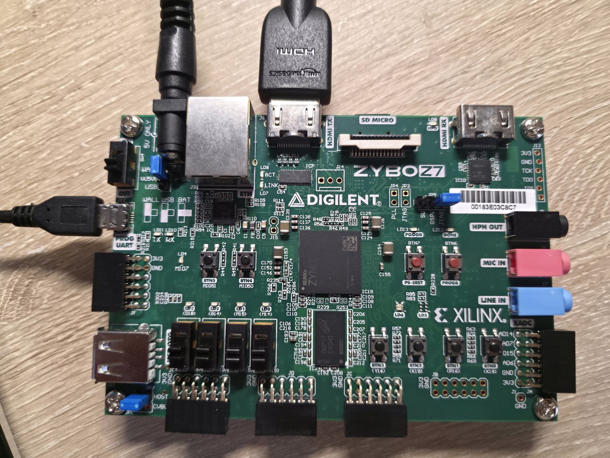

Environment and prerequisites
Things that must be true before the first click. The two Vivado items are permanent, one-time fixes.
01.1Tools, board and cabling
What I did
- Vivado and Vitis 2024.1 on Windows 11; board Digilent Zybo Z7-10 (part
xc7z010clg400-1). - Micro-USB cable to the PROG/UART port (JTAG + serial); HDMI cable into the HDMI TX (OUT) connector and a monitor. The board is powered from the wall plug (5 V barrel supply, visible in the photo), so the power-source jumper is on WALL.
- Serial terminal at 115200 8N1, no flow control (the PS console is UART1 on MIO 48-49).
Why
Everything later (programming, UART keys, video) assumes this wiring; the RX connector is not used.

01.2Use an ASCII-only computer name
What I did
- Check
$env:COMPUTERNAMEonce. If it has a non-ASCII character (mine had a curly quote, U+2018), rename the PC and reboot.
Why
Vivado embeds the host name in .Xil/Vivado-<pid>-<host>; a non-ASCII name makes every synthesis/IP spawn fail with [Common 17-180] Spawn failed: No error.
Code · check and fix the computer name (needs a reboot) (PowerShell)
$env:COMPUTERNAME
($env:COMPUTERNAME.ToCharArray() | ForEach-Object { [int]$_ }) -join ',' # any value > 127 is a problem (8216 = U+2018)
Rename-Computer -NewName "IvanLaptop" -Restart # plain ASCII, letters/digits/hyphenNote
A permanent fix, so it is only a prerequisite in the working flow.
01.3Package the IP from a short path
What I did
- The IP packager creates a nested temp project; synthesis of the IP failed on Windows' 260-byte limit.
- I created a separate short folder outside
MEng_ZYBOfor the IP-packaging project (d:/xilinx/temp/lorenz_dda_driver_v1_0_project3), after which the IP synthesised and repackaged. - The IP source stays in
ip_repo/lorenz_dda_driver_1_0; the packager project only edits it.
Why
Vivado prefixes the run directory to an already absolute path, so the effective path is roughly double.

01.4Repository layout
What I did
ivan_lorenz_hdmi/Zybo-Z7-HW— Vivado project (PL) withip_repo/lorenz_dda_driver_1_0andZybo-Z7-HW.ipdefs/repo(Digilent vivado-library).ivan_lorenz_hdmi/design_1_wrapper— Vitis platform;Zybo-Z7-10-HDMI— application;Zybo-Z7-10-HDMI_system— system project (boot image).- Build junk (
*.runs,*.gen,.metadata,*.bit,*.xsa,*.elf,_ide) is git-ignored.
Why
Keeping hardware, platform and app in one folder makes relative paths in the Vitis project short and portable.
Generated from the project's chat history, git log and source files. Screenshots live in
docs-site/figures/ (see its README).